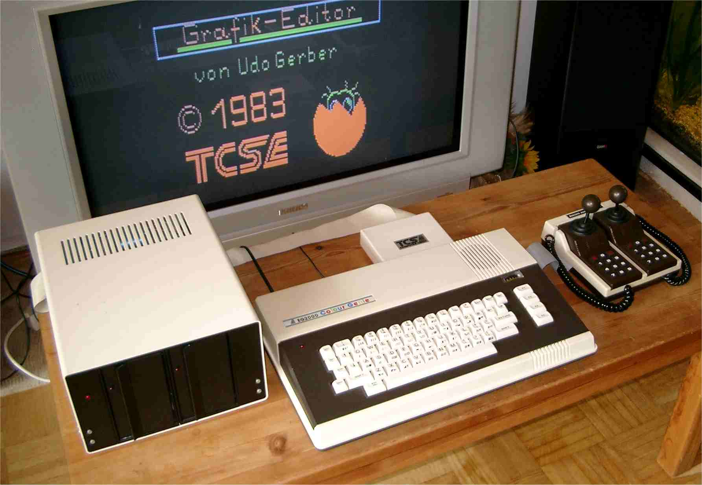

PRARAMBH · Deep Dive Workshop · SRM University AP · Day 1
Problem → Solution
…and the joy of building things people want.
Raj Madhuram · Co-Founder & CTO, C1X · 30+ years of building software · ex-Yahoo!
28 August 2026
…and the joy of building things people want.
Raj Madhuram · Co-Founder & CTO, C1X · 30+ years of building software · ex-Yahoo!
28 August 2026

Photo: Frank Seger · Wikimedia Commons · CC BY-SA 3.0Colour Genie · Z80 8-bit microprocessor · 32 KB RAM · 16 KB ROM · cassette tape for storage · a TV for a monitor
Type → run → it works (or explodes) → fix → run again. That tight feedback loop is the addiction. Startups run the same loop; it's just called build–measure–learn.
32 KB forces you to decide what matters and throw out the rest. Remember that number. Scarcity is a feature; we'll come back to this.
Building for yourself is joy. Watching someone else use what you built is a bigger one. That second joy is the whole startup game.
In Class XII I started building QuizStar, a system for conducting quizzes and self-development. Launched it in my first year at GCT. Nobody assigned it; that's the point.
Hobby projects like Pcaisso and Fantasia live on my weekends today. The habit of building hobby projects is exactly what let me build the cool things at work.
"The way to get startup ideas is not to try to think of startup ideas. It's to look for problems, preferably problems you have yourself."
Paul Graham, How to Get Startup Ideas (2012). Scratch your own itch: Dropbox exists because Drew Houston kept forgetting his USB drive on a bus. SRMPay exists because its team hit a payment problem on this very campus.
It has never been a better time to be building: open-source software, open hardware (Arduino, ESP32), and now AI tools like Claude Code. In 1995 a working product needed a team and a year. In 2026, a student team can ship one in days. Which means:
~35% of startup post-mortems cite "no market need", the single largest cause (CB Insights). The most dangerous sentence in a pitch: "We've built it — now we need to find users."
Your own submissions are the case studies: 34 teams, 26 at idea stage, 8 prototypes, 1 MVP.
Your current solution is one of many possible answers to your problem. Before you commit, prove to yourself you picked the best one.
Turn it into "How Might We…" questions; each framing opens different solutions. Take Cauframe's validated problem: PM2.5 pollution is driving a 60% rise in eye-infection OPD visits.
HMW physically block particles from reaching the eyes?
→ protective eyewear with side shields (their answer)
HMW treat or soothe pollution-irritated eyes affordably?
→ drops, wipes, clinics, tele-ophthalmology
HMW reduce exposure for outdoor workers altogether?
→ exposure alerts, employer safety kits
One rule: the center is the problem, never your solution. Branches are approaches; twigs are concrete ideas. 15 minutes of this beats 2 hours of arguing. Digital versions: Excalidraw, FigJam, Miro — but paper and a whiteboard are faster for round one.
Fold a sheet into 8 panels. 8 sketches in 8 minutes, each a different solution. Speed kills your inner censor; sketch 6 is usually the interesting one.
From Google Ventures' Design Sprint. Works with zero artistic skill.
6 people silently write 3 ideas in 5 minutes, pass the sheet, build on what you receive. Two rounds = dozens of ideas.
Fixes the disease of every student team: the loudest voice wins.
Substitute · Combine · Adapt · Modify · Put to other use · Eliminate · Reverse — applied to an existing solution.
Eliminate is the sharpest blade: what if GREEN CYCLE dropped the factory and just brokered tyres to existing recyclers first?
S T Sundar's team found a sharp problem: trains show WL 150 while 150+ seat-legs run empty across segments. That single problem admits at least five solutions:
"Your unconscious won't even let you see ideas that involve painful schleps… The most striking example I know is Stripe. Thousands of programmers knew how painful it was to handle payments. But they looked away."
Paul Graham, Schlep Blindness (2012), lightly condensed
Everyone in this cohort chasing a shiny consumer AI app walked past ideas like Dream It (pharmacy procurement) and Stellaris (CA firm workflows). Unglamorous problem + paying customer + no one else willing to do the schlep = the best kind of startup.
The hardest design decision is not what to build. It's what not to build first.
"Lots of people are mildly interested." A social app for everyone; a platform for all farmers; an assistant for every task. Nobody's life changes.
A small group needs it urgently. One user, one problem, one killer feature, solved end-to-end. Then the well widens: every big company started as somebody's well.
"When a startup launches, there have to be at least some users who really need what they're making — not just people who could see themselves using it one day, but who want it urgently."
Paul Graham, How to Get Startup Ideas — and its cousin: "Better to make a few users love you than a lot ambivalent." (Startups in 13 Sentences)
These are bold, genuinely exciting visions, and I mean that. But look at the v1 surface area:
| Team | The vision (great!) | v1 surface area |
|---|---|---|
| HappyHome | Cook + cleaner + nanny + night guardian + laundry + security + utensils + doctor-on-call, one subscription | 8 services × supply ops, each |
| Desi9 | AI wardrobe extraction + color analysis + Pinterest matching + shopping engine + designer studio + brand drops | 6 products in one app |
| BioByte | Farm-to-factory "Bio-OS": feedstock maps + IoT cold chain + bioreactor digital twins + waste yield + carbon SaaS | 5 layers, 6 customer types |
| OMNI | One AI workspace that orchestrates all your other tools | Every integration is a product |
Vision: everything store.
Wedge: books only. One supplier network, one logistics problem, four years.
Vision: all of food.
Wedge: scanned menu PDFs for Delhi offices. Delivery came 7 years later.
Vision: 8-service family OS.
Wedge: verified cook + 1-hour replacement in 3 apartment complexes. Nail trust, then add services.
| Team | The scoping move | What they said no to |
|---|---|---|
| Stellaris (Veritas) | "We do not replace Tally/Zoho; we orchestrate the workflow around them" | Rebuilding accounting software |
| Aven | One deliverable: an evidence-backed Issues List. "No evidence means no finding." | Deciding the deal; generic AI analyst |
| NeuroNest | "A screening and referral aid, not a diagnostic tool", for parents of children 2–8, Tier-2/3 | Playing doctor; regulatory quicksand |
| SRMPay | Campus-only: verified SRM students + campus vendors | Competing with UPI for everyone |
Keep this sentence. You'll use it in the worksheet at the end, and your Day 2 mentor will ask for it.
Does your solution actually talk to the customer's pain? And can you build it, and is it worth it?
What you actually offer
How each feature kills a specific customer pain
How you produce outcomes they want
What they're trying to accomplish: functional, social, emotional
What blocks, annoys, or risks them today
Outcomes they'd love, expected or unexpected
Voice-first AI marketplace in Telugu: sell produce, buy inputs, book logistics
Voice UI → literacy barrier gone · Direct buyers → middleman margin recovered · One number to call → no app maze
Price transparency before selling · Trusted, repeatable channel
Sell harvest at a fair price · get quality inputs on time · feel in control, not dependent
Middlemen take the margin · can't read app-first platforms · no price visibility · unreliable access to services
More income per harvest · dignity of dealing direct · advice in own language
Every left-side item points at a named right-side pain. That's fit on paper. Now compress it into one breath: "For [customer] who [pain], [product] is a [category] that [benefit]. Unlike [today's alternative], we [difference]." You'll write yours in the activity.
Desirability you validated yesterday. Two more lenses remain: can you build and run it (feasibility), and does it sustain itself (viability — Session 4's job). The jury's feasibility questions, mapped to this room:
| Dimension | The honest question | In this room |
|---|---|---|
| Technical | What must be true physically or algorithmically, and what does your data show so far? | BHHARRAT: what efficiency does the electrolyser hit today vs. the claim? Trientra: has aeroponic saffron flowered anywhere at your target cost? |
| Adoption | Does the solution require many parties to change behavior at once? | Med Rakshaks: blockchain verification works only if manufacturers, distributors and pharmacies all onboard |
| Operational | Can a student team actually run this supply/service? | HappyHome's 1-hour replacement guarantee = a standby workforce. Costed? |
| Regulatory | Whose permission do you need? | SRMPay: deferred payments brush against RBI lending rules. NeuroNest handled this well by scoping to screening. |
"Feasible" doesn't mean solved. It means you can name the hard part and show a credible path, or a de-risking experiment.
1.51 lakh CAs in full-time practice × ₹5,000/month for even 1 lakh firms = ₹5,800+ crore/year. Built from real units, not "1% of a $50B market".
Harvest-now-decrypt-later attacks + NIST FIPS 203/204 deadlines = a forcing function. Timing is an argument, not a vibe.
Under 15/25? The idea isn't dead, but pick your wedge again. ⑤ is where campus ideas like SRMPay quietly score 5/5.
The cheapest honest experiment that tells you whether to keep going. This is the practical heart of the session, and where I'll tell you two stories.
Founders flew to New York, went door to door photographing hosts' apartments themselves. Bookings doubled. No platform feature did that.
The "Collison installation": when anyone said they'd try Stripe, the founders said "give me your laptop" and set it up on the spot.
"Startups take off because the founders make them take off… The most common unscalable thing founders have to do at the start is to recruit users manually. Nearly all startups have to."
Paul Graham, Do Things That Don't Scale (2013) — the single most useful essay for the next 30 days of your venture
Template: "We believe [X]. If we're wrong about this, nothing else matters." Usually it's about behavior or money, rarely about technology.
| Team | Likely riskiest assumption |
|---|---|
| Dream It | Small pharmacies will switch suppliers and pay a subscription, not just say procurement is painful |
| Genesis (Journi) | Travelers will trust and follow an AI itinerary enough to change bookings |
| OpenBin | Households will consistently segregate and schedule pickups for modest rewards |
| Pet Orbit | Existing pet centers will accept standards + commission for demand they don't have today |
| DocSathi | Users stuck on government forms will trust an app over the local middleman who "knows a guy" |
Describe the offer, count signups or pre-orders
days · ₹0Deliver the service manually to a few customers (Zappos: photographed shoes from local stores)
1–2 weeks · ₹0–5kLooks automated outside; humans behind the curtain. Test the promise before the tech
2–4 weeksThe killer feature only, for the wedge segment (Dropbox started with a demo video)
4–8 weeksOne real institution / locality / crop season, with success criteria agreed upfront
a quarterAirbnb's first version: air mattresses in the founders' own flat during a conference. The assumption (strangers will pay to stay in a stranger's home) needed zero platform.
"Project Moneyball: An Oral History", Fast Company, 2015. A billion-dollar company moving at hackathon speed, because the scope was a well, not a crater. If Yahoo could do it with 18 people, you can do your v1 with 4.
I built a 3D modeling platform from scratch, using principles straight out of our Engineering Drawing class: projections, transformations, hidden-line removal. Months of work. It went on to win prizes at national-level contests.
I re-created it with Claude Code in a few hours. Same math, same principles; the AI wrote the scaffolding, I steered with what I knew. The joy was identical. The timeline was not.
Fair warning I'm a software guy, so this slide is biased. Hardware teams: yours is next.
| Need | 2026 answer | Cost |
|---|---|---|
| Write the code | Claude Code / Cursor as your pair programmer; you steer, it types | free tiers exist |
| UI in an afternoon | v0.dev, Figma Make, or plain HTML the AI writes | ₹0 |
| Backend + database | Supabase or Firebase; don't write your own auth, ever | ₹0 at your scale |
| Put it online | Vercel / Netlify, live URL in minutes | ₹0 |
| Reach users (India) | A WhatsApp number beats an app store launch for v1. DocSathi: landing page + WhatsApp + you filling the forms behind the curtain = a complete Wizard-of-Oz MVP | ₹0 |
| Team | The two-week test | It proves / kills |
|---|---|---|
| DocSathi | Manually walk 20 students through one document (say, passport) over WhatsApp | Will people trust & pay vs. the agent? |
| HappyHome | Concierge cook service for 5 families in one complex, phone-only, keep a replacement on standby | Reliability promise; willingness to pay ₹5,999 |
| Genesis | Hand-craft 10 itineraries for real travelers; track how many are actually followed | Do people act on the plan? |
| Aven | Run AI-assisted diligence on 2 closed deals; compare findings & hours vs. what the team found manually | Time saved + missed red flags = the pitch |
| Crop Pilots | WhatsApp advisory for 20 chilli farmers for one fortnight, humans + AI behind the scenes | Engagement; which advice they act on |
| EventEz | Plan 3 real events end-to-end with a Google Form + curated vendor sheet | Where planning pain actually bites |
Proves the physics/function, can be ugly. AquaRescue: muddy-water field test + a certified lab report. That report is a pitch slide.
Proves desirability & wearability. Cauframe: 3D-printed frames on 30 real commuters for a week, collecting comfort & style feedback.
Pre-orders, deposits, LOIs. GREEN CYCLE: signed letters from 5 tyre shops beat a factory blueprint.
"We will run [test] with [n] real [users] for [period].
We succeed if [metric ≥ threshold]. If not, we [pivot / re-scope / kill]."
Committing to the threshold in advance is what makes it an experiment instead of a story you'll retro-fit. Write it down where your team can't un-see it.
Software development is not just coding, and a startup is not just a product. More early ventures die of team friction than of competition. Communication is infrastructure; build it like you build the product.
Split the venture into areas (product, tech, users/market) and give each one owner. Everyone gets input; one person decides. Consensus on everything is how student teams ship nothing.
Each person, three sentences: what I did, what's next, what's blocking me. Same time daily, standing up. Blockers surface in hours instead of festering for weeks.
Weekly, show each other working things: a screen, a prototype, an interview recording. Progress is measured in demos, not promises. Moneyball's war room ran on this.
Teams that document compound; teams that don't repeat the same arguments monthly. The minimum viable documentation for a student venture — one shared folder, four living documents:
| Document | What goes in it | Who it saves you with |
|---|---|---|
| README | What this is, how to run it, current status. One page, always current | New teammates, hackathon judges, your own future self |
| Decision log | One line per decision: what we chose, what we rejected, and why | The jury's "why this approach?" is pre-answered here |
| Interview notes | Verbatim customer quotes, dated and tagged by pain | Your evidence slide writes itself; mentors trust quotes over claims |
| Demo runbook | Exact steps to run the demo, without the one person who built it | Day 3, when that person's laptop dies at 9 am |
Homework, 40 minutes total: Paul Graham's How to Get Startup Ideas, Do Things That Don't Scale, Schlep Blindness — all free at paulgraham.com. Day 3's jury scores exactly what we practiced: Solution ties to problem, Value proposition is clear, Evidence exists.
— Paul Graham. It's the whole game in four words.
I've been chasing the same joy since 32 KB of RAM and a cassette drive. It has never been cheaper to feel it than right now. This weekend, go build the smallest thing that could prove somebody wants it. HP started in a garage; Facebook in a dorm room. What is your garage?
Thank you. Questions now, or grab me during the breaks. I'm mentoring here all three days.
Raj Madhuram · linkedin.com/in/rmadhuram · PRARAMBH Deep Dive Workshop · SRM University AP · 28 August 2026